Wprowadzenie
Multipurpose Discord to Margonem Addons (MDMA) to pierwszy publicznie dostępny zestaw dodatków do gry Margonem napisany w języku Rust, zainspirowany zestawami Maddonz, Gargonem oraz REVO. Rozszerzenie przeglądarkowe MDMA oferuje znacznie więcej możliwości, niż standardowe skrypty działające w Tampermonkey.
Celem zestawu jest zapewnienie graczom dostępu do najlepszych dodatków na rynku, bez konieczności żonglowania skryptami z wielu niezależnych źródeł.
Jakiś błąd lub pomysł na zmianę? Zapraszamy na nasz serwer Discord!
W tej książce znajdziesz komplet informacji o dostępnych dodatkach oraz szczegółowy opis funkcjonalności zestawu. Tak, zestaw jest rozbudowany na tyle, że napisałem do niego dokumentację 🫠
Wszystko znajduje się w pasku bocznym (może być zwinięty na urządzeniach mobilnych), ale oto szybki podgląd zawartości:
Kilka istotnych informacji, zanim przejdziemy do instalacji. MDMA tworzone jest przez graczy (a właściwie jednego gracza) – dla graczy. Poprzez głosowania na discordzie to właśnie Wy decydujecie o tym, co jako następne pojawi się w zestawie!
Dokładam wszelkich starań, aby każdy dodatek zawierał wszystkie potrzebne funkcjonalności i nie zagrażał bezpieczeństwu kont użytkowników.
INFO: Od początku istnienia zestawu1, żaden użytkownik nie został zbanowany za korzystanie z MDMA! Dodatkowo, od niedawna współpracujemy z administracją gry, aby na bieżąco monitorować i dbać o zgodność dodatków z regulaminem.
Wygląd managera2 dodatków jest zainspirowany modem Mega Hack. Okna dodatków przypominają te z gry, ale technicznie to zupełnie inna liga — są szybsze, lżejsze i niewykrywalne dla kodu spoza zestawu. Kod MDMA nie korzysta z rozwiązań Garmory, wszystko pisane jest od zera w Rust 🚀
-
Pierwsza oficjalna wersja zestawu została upubliczniona 30.11.2023 ↩
-
Wygląd managera jest aktualnie w przebudowie! ↩
⚠️ UWAGA: Dopóki zestaw nie osiągnie stabilnej wersji (1.0.0) mogą pojawiać się błędy oraz zmiany podstawowych funkcjonalności (Zgłaszanie Błędów)
Instalacja
Zestaw MDMA jest dostępny wyłącznie jako rozszerzenie przeglądarkowe. Aby zacząć korzystać z MDMA, wystarczy je zainstalować — cały proces zajmuje dosłownie chwilę.
Udostępnienie rozszerzenia w sklepach planowane w wersji 0.15.0
- Chrome Web Store - WKRÓTCE™
- Firefox Add-Ons - WKRÓTCE™
- Zapisz oraz rozpakuj folder rozszerzenia na swoim urządzeniu.
- Wejdź na chrome://extensions
- W prawym górnym rogu włącz Tryb dewelopera.
- Kliknij Załaduj rozpakowane.
- Znajdź i wybierz folder rozszerzenia.
- Wejdź do gry margonem.
- Zaloguj się do rozszerzenia za pomocą konta Discord.
- Gotowe! Miłego korzystania ☺️
Jeśli wolisz, możesz też obejrzeć wersję video.
W przypadku problemów podczas instalacji napisz do nas na discordzie!
Kiedy Aktualizować Zestaw
Ta sekcja dotyczy wersji rozszerzenia w
chrome://extensions1, nie wersji wyświetlanej wewnątrz gry!
MDMA stosuje wersjonowanie semantyczne (polecam się z tym zapoznać!) podczas wydawania nowych wersji, co oznacza, że numer wersji odzwierciedla zmiany w funkcjonalności oraz kompatybilności z poprzednimi wersjami.
- Wersjonowanie zestawu wygląda następująco: x.y.z, gdzie:
- x - numer wersji MAJOR (obecnie nas nie interesuje),
- y - numer wersji MINOR,
- z - numer wersji PATCH.
- W przypadku, gdy masz inny numer MINOR (np 0.11.0), niż aktualna wersja (np 0.13.0) do poprawnego działania zestawu wymagana jest aktualizacja.
- W przypadku, gdy twój numer PATCH jest inny niż numer PATCH aktualnej wersji nie jest wymagana aktualizacja do poprawnego działania zestawu.
👻 Wersja Nightly 👻
Link instalacyjny do wersji testowej zestawu znajduje się TUTAJ.
W tej wersji zawsze znajdują się najświeższe zmiany, jednak mogą występować błędy związane z nowymi funkcjonalnościami.
Zgłaszanie Błędów
W przypadku napotkania błędu podczas korzystania z zestawu, prosimy o kontakt na naszym discordzie.
-
Wersje te są niezależne od siebie dopóki zestaw nie znajduje się na chrome webstore. ↩
⚠️ UWAGA: Dopóki zestaw nie osiągnie stabilnej wersji (1.0.0) mogą pojawiać się błędy oraz zmiany podstawowych funkcjonalności (Zgłaszanie Błędów)
Lista Dodatków
W tym rozdziale znajdują się wszystkie informacje na temat dodatków zestawu. Zanim jednak przejdziemy do szczegółowych opisów każdego z nich, zapoznajmy się z podstawowymi pojęciami.
Przyciski Wewnątrz Managera
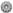 - Przełącznik okna ustawień dodatku.
- Przełącznik okna aktywnych ustawień dodatku.
📋 - Przycisk do kopiowania logów1 z gry, potrzebnych przy zgłaszaniu błędu w zestawie. Znajduje się w nagłówku Konsola.
Okna Dodatków
Wewnątrz zestawu rozróżniane są dwa rodzaje okienek dodatków:
- okno ustawień,
- okno aktywnych ustawień.
Okno ustawień dodatku jest najczęściej tym bardziej rozbudowanym oraz zawiera w sobie wszystkie ustawienia dodatku, które nie muszą być natychmiastowo dostępne np. ustawianie skrótów klawiszowych. Okno ustawień można włączyć niezależnie od tego czy dodatek jest włączony, czy nie.
Okno aktywnych ustawień dodatku to miejsce na najważniejsze opcje dostępne w trakcie korzystania z dodatku. Okno aktywnych ustawień wyświetla się wtedy i tylko wtedy, gdy dodatek oraz okno aktywnych ustawień są włączone. Od okna ustawień różni się jeszcze tym, że (w zależności od dodatku) można zmieniać jego rozmiar.
Szukanie Dodatków
Jeżeli jesteś zainteresowany działaniem konkretnego dodatku zalecam wyszukać go za pomocą lupy (lewy górny róg ekranu).
-
Logi zawierają wyłącznie informacje na temat otoczenia bohatera oraz kod błędu. ↩
⚠️ UWAGA: Dopóki zestaw nie osiągnie stabilnej wersji (1.0.0) mogą pojawiać się błędy oraz zmiany podstawowych funkcjonalności (Zgłaszanie Błędów)
Adaptacyjne Zestawy Do Walki
🔒 Ten dodatek jest dostępny wyłącznie w wersji Premium. 🔒
Dodatek automatycznie zmienia zestaw do walki w zależności od otoczenia.
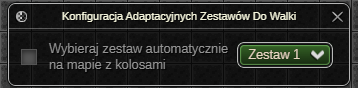
Okno Ustawień
Ustawienia ogólne
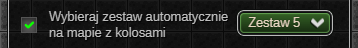
- Możliwość automatycznej zmiany zestawu do walki w zależności od tego czy w aktualnej lokacji, znajduje się potwór o randze kolos.
Ostatnia aktualizacja: 0.14.4
⚠️ UWAGA: Dopóki zestaw nie osiągnie stabilnej wersji (1.0.0) mogą pojawiać się błędy oraz zmiany podstawowych funkcjonalności (Zgłaszanie Błędów)
Akceptowanie Przywołań
Dodatek automatycznie akceptuje przywołania na mapę od określonych graczy.
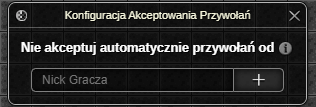
Okno Ustawień
Nie akceptuj automatycznie zaproszeń od
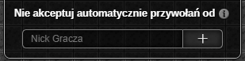
Jeżeli nick gracza przywołującego znajduje się na liście wykluczeń, nie zostanie ono automatycznie zaakceptowane. Zamiast tego wybór będzie należał do bohatera.Ostatnia aktualizacja: 0.14.4
⚠️ UWAGA: Dopóki zestaw nie osiągnie stabilnej wersji (1.0.0) mogą pojawiać się błędy oraz zmiany podstawowych funkcjonalności (Zgłaszanie Błędów)
Akceptowanie Zaproszeń Do Grupy
Dodatek automatycznie akceptuje zaproszenia do grupy od określonych graczy.
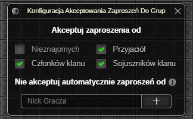
Okno Ustawień
Akceptuj zaproszenia od
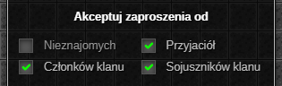
Dodatek automatycznie zaakceptuje zaproszenia od gracza, jeżeli posiada on którąkolwiek z zaznaczonych relacji. W przeciwnym razie zaproszenie nie zostanie odrzucone.Nie akceptuj automatycznie zaproszeń od
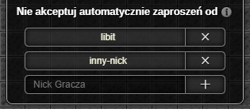
Jeżeli nick gracza wysyłającego zaproszenie znajduje się na liście wykluczeń, nie zostanie ono automatycznie zaakceptowane. Zamiast tego wybór będzie należał do bohatera.Ostatnia aktualizacja: 0.14.4
⚠️ UWAGA: Dopóki zestaw nie osiągnie stabilnej wersji (1.0.0) mogą pojawiać się błędy oraz zmiany podstawowych funkcjonalności (Zgłaszanie Błędów)
Gracze Na Mapie
Dodatek wyświetla listę graczy znajdujących się w aktualnej lokacji, umożliwiając interakcje z każdym z nich.

Okno Ustawień
Ustawienia ogólne
- 🔒 Funkcja Premium 🔒 Możliwość automatycznego przerwania dobijania gracza, w przypadku:
- zmiany trasy przez bohatera przed dotarciem do celu,
- opuszczenia przez cel zasięgu ataku.
Możliwość otwierania okna aktywnych ustawień za pomocą wbudowaniego do gry widgetu Gracze na mapie.
Lista graczy

- Dostępne opcje sortowania listy to sortowanie względem:
- poziomu - w przypadku takiego samego poziomu gracze sortowani są alfabetycznie,
- nicku,
- profesji - sortowanie dzieli listę na grupy profesji, które ustawiane są w zależności od ilości graczy o danej profesji. Wewnątrz poszczególnych grup gracze sortowani są malejąco według poziomu, następnie alfabetycznie według nicku.
- Kolejność sortowania pozwala wybrać "kierunek" sortowania - malejący lub rosnący.
- Wyświetlanie poziomów określa w jaki sposób wyświetlać poziomy graczy z listy. Dostępne opcje to:
- Poziom | Poziom operacyjny
- Poziom operacyjny | Poziom
- Tylko poziom operacyjny
- Tylko poziom
Okno Aktywnych Ustawień
Licznik graczy

Po najechaniu na licznik graczy myszką wyświetlana jest szczegółowa lista relacji graczy znajdujących się w bieżącej lokacji. Ze względu na mechanikę gry, jeżeli gracz jest jednocześnie np. przyjacielem oraz klanowiczem pod uwagę będzie brana tylko ważniejsza1 relacja.
Lista graczy
Tabela z graczami znajdującymi się w aktualnej lokacji, w zawartość pojedynczej komórki gracza wchodzą:

- nick,
- lista okazywanych aktualnie emocji,
- poziom,
- profesja.
Komórka jest kolorowana w zależności od relacji oraz przynależności do grupy gracza. Dodatkowe informacje wyświetlane po najechaniu myszką to m.in. nazwa klanu i outfit.
Po dwukliku LPM na komórkę gracza, bohater automatycznie do niego podejdzie.
Po kliknięciu PPM na komórkę gracza dostępne jest menu kontekstowe w skład którego wchodzą opcje:

- 🔒 Funkcja Premium 🔒
Dobijaj- wyznacza gracza na cel:- po wybraniu tej opcji bohater podejdzie do celu i będzie go atakować, dopóki m.in. przeciwnik się nie teleportuje lub nie rozpocznie się walka.
- ✅ Funkcja Non-Premium ✅
Atakuj- wyznacza gracza na cel (działa tak samo jak opcja z gry). Handluj- podchodzi do gracza oraz wysyła żądanie handlu.Pocałuj- całuje gracza (dostępne od 30 poziomu doświadczenia).Karmazynowe błogosławieństwo- podchodzi do gracza oraz rzuca na niego karmazynowe błogosławieństwo.Wyślij wiadomość- rozpoczyna proces wysyłania wiadomości prywatnej do gracza (dostępne jeżeli gracz nie jest wrogiem bohatera).Pokaż ekwipunek- otwiera okno z ekwipunkiem gracza.Zaproś do przyjaciół- zaprasza gracza do przyjaciół.Zaproś do drużyny- zaprasza gracza do drużyny.Pokaż profil- otwiera okno z profilem gracza.

W takiej sytuacji – a także po najechaniu kursorem na jego komórkę lub kliknięciu jej PPM – pojawia się strzałka wskazująca jego pozycję. Dodatkowo gracz-cel renderowany jest nad wszystkimi obiektami na mapie i otoczony wyraźną ramką.
Wyszukiwarka graczy

Wyszukiwarka u dołu listy umożliwia filtrowanie graczy po nicku.
Ostatnia aktualizacja: 0.14.4
-
W planach i tak jest obejście więc nie bd tego tłumaczył jo. ↩
⚠️ UWAGA: Dopóki zestaw nie osiągnie stabilnej wersji (1.0.0) mogą pojawiać się błędy oraz zmiany podstawowych funkcjonalności (Zgłaszanie Błędów)
Kastrat
🔒 Ten dodatek jest dostępny wyłącznie w wersji Premium. 🔒
Potocznie nazywany Auto X. Dodatek służy gonieniu i automatycznemu atakowaniu graczy, wybieranych na podstawie określonych przez użytkownika kryteriów.
W przeciwieństwie do wszystkich Auto X-ów na rynku, Kastrat działa w oparciu o analizę otoczenia bohatera, co znacząco zmniejsza ilość zużywanych zasobów. Dzięki niestandardowej metodzie ataku, potrafi działać nawet o 33%–50% szybciej (w zależności od interfejsu), skuteczniej wyłapując graczy niż jakiekolwiek inne rozwiązania.
INFO: Uruchomienie wielu Auto X-ów jednocześnie nie zwiększy skuteczności żadnego z nich!
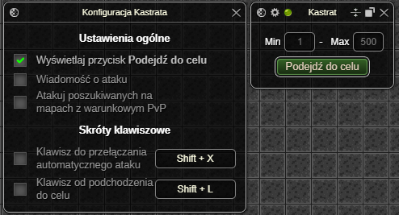
Okno Ustawień
Ustawienia ogólne
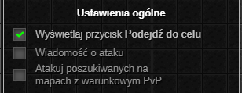
- Przełącznik wyświetlania przycisku Podejdź do celu.
- Przełącznik wyświetlania wiadomości podczas wysłania żądania ataku do aktualnego celu.
- Opcjonalne atakowanie graczy poszukiwanych listem gończym na mapach z warunkowym PvP.
Skróty klawiszowe
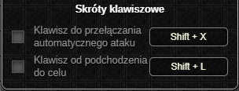
Wewnątrz dodatku dostępne są również dwa skróty klawiszowe:- włączanie/wyłączanie automatycznego atakowania celu,
- podejście do aktualnego celu.
Okno Aktywnych Ustawień
Ustawienia ogólne
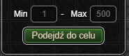
- Zakres poziomowy, z którego wybierany jest aktualny cel.
- Przycisk Podejdź do celu.
Ostatnia aktualizacja: 0.14.4
⚠️ UWAGA: Dopóki zestaw nie osiągnie stabilnej wersji (1.0.0) mogą pojawiać się błędy oraz zmiany podstawowych funkcjonalności (Zgłaszanie Błędów)
Poprawione Powiadomienia
Dodatek umożliwia zmianę wyglądu żółtych wiadomości z gry, wyświetlanych np. przy wbiciu poziomu.
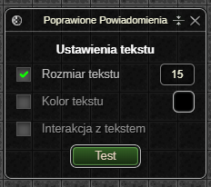
Okno Aktywnych Ustawień
Ustawienia tekstu
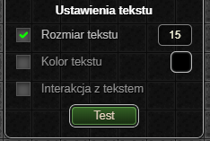
- Wybór rozmiaru tekstu.
- Wybór koloru tekstu.
- Wybór interakcji z tekstem - po włączeniu konieczne jest zamknięcie wiadomości, aby móc kliknąć elementy pod nią.
Ostatnia aktualizacja: 0.14.4
⚠️ UWAGA: Dopóki zestaw nie osiągnie stabilnej wersji (1.0.0) mogą pojawiać się błędy oraz zmiany podstawowych funkcjonalności (Zgłaszanie Błędów)
Rówieśnicy Online
Dodatek wyświetla listę rówieśników online - klanowiczy lub przyjaciół, umożliwiając interakcje z każdym z nich.
Status aktywności rówieśników aktualizuje się automatycznie1, w przeciwieństwie do ich pozycji. W celu ograniczenia ilości zapytań wysyłanych przez dodatki zestawu, obecnie jedynym sposobem na odświeżenie pozycji rówieśników jest ręczne odświeżenie listy.
Wyjątek stanowi sytuacja, gdy rówieśnik znajduje się na tej samej mapie co bohater – wtedy jego pozycja aktualizowana jest na bieżąco2.
Dzięki innowacyjnym rozwiązaniom, dodatek oferuje niespotykany nigdzie indziej zestaw interakcji z rówieśnikami — w tym podgląd profilu gracza bezpośrednio w interfejsie gry!
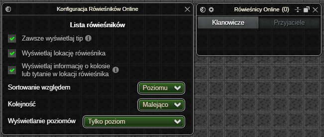
Okno Ustawień
Lista rówieśników
- Przełącznik pozwalający wybrać, czy tip rówieśnika ma być wyświetlany zawsze po najechaniu myszką na jego komórkę, czy tylko wtedy, gdy jego opis nie mieści się w oknie.
- Opcjonalne wyświetlanie lokacji rówieśników.
- Opcjonalne wyświetlanie informacji o kolosie lub tytanie w lokacji rówieśnika. 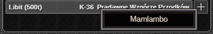
- Dostępne opcje sortowania listy to sortowanie względem:
- poziomu - w przypadku takiego samego poziomu gracze sortowani są alfabetycznie,
- nicku,
- profesji - sortowanie dzieli listę na grupy profesji, które ustawiane są w zależności od ilości graczy o danej profesji. Wewnątrz poszczególnych grup gracze sortowani są malejąco według poziomu, następnie alfabetycznie według nicku.
- Kolejność sortowania pozwala wybrać "kierunek" sortowania - malejący lub rosnący.
- Wyświetlanie poziomów określa w jaki sposób wyświetlać poziomy graczy z listy. Dostępne opcje to:
- 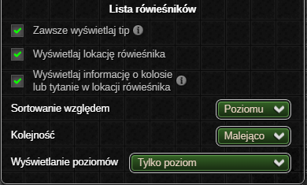Poziom | Poziom operacyjny
- Poziom operacyjny | Poziom
- Tylko poziom operacyjny
- Tylko poziom
Okno Aktywnych Ustawień
Zakładki relacji
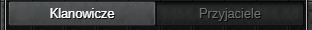
Panel zakładek relacji umożliwia przełączanie pomiędzy listą klanowiczów a listą przyjaciół aktualnie będących online.
Lista rówieśników
Tabela z rówieśnikami wyświetla listę klanowiczy lub przyjaciół online w zależności od wybranej zakładki. W zawartość pojedynczej komórki rówieśnika wchodzą:
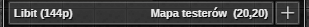
- nick,
- poziom,
- profesja,
- mapa na której znajduje się gracz,
- koordynaty, jeżeli gracz znajduje się na tej samej mapie co bohater,
- przycisk + umożliwiający zaproszenie do grupy.
Dodatkowe informacje wyświetlane po najechaniu myszką to m.in. nazwa klanu i outfit.
Jeśli rówieśnik znajduje się na tej samej mapie co bohater, po dwukliku LPM na jego komórkę w liście, bohater automatycznie do niego podejdzie.
Po kliknięciu PPM na komórkę rówieśnika dostępne jest menu kontekstowe w skład którego wchodzą opcje:
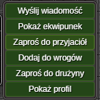
Wyślij wiadomość- rozpoczyna proces wysyłania wiadomości prywatnej do gracza (dostępne jeżeli gracz nie jest wrogiem bohatera).Pokaż ekwipunek- otwiera okno z ekwipunkiem gracza.Zaproś do przyjaciół- zaprasza gracza do przyjaciół.Dodaj do wrogów- dodaje gracza do listy wrogów.Zaproś do drużyny- zaprasza gracza do drużyny.Pokaż profil- otwiera okno z profilem gracza.
Jeśli rówieśnik znajduje się na tej samej mapie co bohater, po najechaniu kursorem na jego komórkę lub kliknięciu jej PPM – pojawia się strzałka wskazująca jego pozycję. Dodatkowo gracz-cel renderowany jest nad wszystkimi obiektami na mapie i otoczony wyraźną ramką.
Odświeżanie listy
Mechanizm odświeżania pozycji rówieśników w liście działa w sposób znany z aplikacji mobilnych: przewiń listę maksymalnie do góry, a następnie pojawi się ikona, po przeciągnięciu której lista zostanie zaktualizowana.
Ostatnia aktualizacja: 0.14.4
-
Automatycznie - od razu po zalogowaniu lub wylogowaniu gracza bez konieczności wysyłania zapytań do serwera gry. ↩
-
Dokładna pozycja (wraz z koordynatami) aktualizuje się przy każdym kroku rówieśnika. Jeżeli rówieśnik opuści mapę, zapisana pozycja zostaje usunięta (bohater nie wie gdzie znajduje się rówieśnik, aż do odświeżenia listy). ↩
⚠️ UWAGA: Dopóki zestaw nie osiągnie stabilnej wersji (1.0.0) mogą pojawiać się błędy oraz zmiany podstawowych funkcjonalności (Zgłaszanie Błędów)
Super Rzemieślnik
Dodatek umożliwia wykorzystanie przedmiotów z łupu lub ekwipunku jako składników do ulepszania.
- Automatyczne ulepszanie przedmiotów umieszczonych w oknie dodatku przy użyciu wybranych typów łupów z potworów.
- Przycisk Ulepsz umożliwiający ulepszanie przedmiotami z ekwipunku bohatera o rzadkości wyższej niż pospolita.
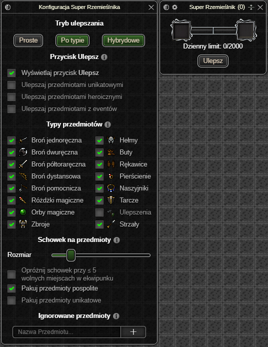
Okno Ustawień
Tryb ulepszania
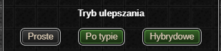
Proste– ulepszanie jednego przedmiotu umieszczonego w oknie dodatku.- Przedmiot zostanie ulepszony wszystkimi typami przedmiotów wybranymi przez gracza.
Po typie– ulepszanie do 3 przedmiotów osadzonych w oknie dodatku (licząc od lewej):- Pancerze – ulepszane wybranymi przez gracza pancerzami.
- Biżuteria – ulepszana wybraną przez gracza biżuterią.
- Broń – ulepszana wybraną przez gracza bronią.
Hybrydowe– połączenie dwóch poprzednich trybów.- Jeśli którekolwiek z pól z trybu
Po typiejest puste, pozostałe typy przedmiotów zostaną użyte do ulepszania przedmiotu z pola trybuProste.
- Jeśli którekolwiek z pól z trybu
Przycisk Ulepsz
Dokładne działanie przycisku opisane jest tutaj.
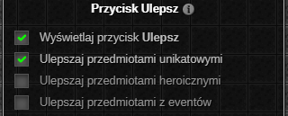
- Przełącznik wyświetlania przycisku wewnątrz okna aktywnych ustawień.
- Przełącznik ulepszania przedmiotami unikatowymi.
- Przełącznik ulepszania przedmiotami heroicznymi.
- Przełącznik ulepszania przedmiotami z eventów.
Typy przedmiotów
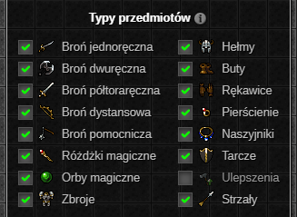
Lista przełączników rodzajów przedmiotów spalanych podczas ulepszania za pomocą dodatku.Typ Ulepszenia zużywa wyłącznie ulepszenia o rzadkości pospolitej, unikatowej oraz heroicznej.
Kołczany są zapisane jako strzały, tak samo jest w oknie rzemiosła z gry (?)
Schowek na przedmioty
Łup z potworów spełniający aktualne kryteria zostaje przechowany w schowku. Przedmioty z łupu zostaną wykorzystane do ulepszania po jego zapełnieniu.
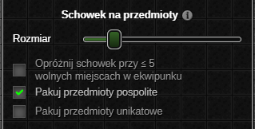
- Suwak umożliwiający wybranie rozmiaru schowka
- Jeżeli opcja
Opróżnij schowek przy ≤ x miejscach w ekwipunkujest włączona, to rozmiar schowka jest aktualizowany dynamicznie na podstawie wolnych miejsc w ekwipunku bohatera.
- Jeżeli opcja
- Możliwość pakowania przedmiotów pospolitych do schowka.
- Możliwość pakowania przedmiotów unikatowych (z wyłączeniem przedmiotów z eventów) do schowka.
Ignorowane przedmioty
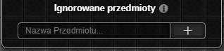
Jeśli nazwa przedmiotu zawiera którekolwiek z wyrażeń z tej listy, nie zostanie on umieszczony w schowku ani zużyty podczas ulepszania za pomocą przycisku Ulepsz.
Okno Aktywnych Ustawień
Stan schowka
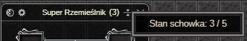
Wewnątrz górnej belki okna wyświetlany jest aktualny stan zapełnienia schowka.Pola na przedmioty
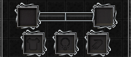
Pod górną belką okna wyświetlane są pola na przedmioty przeznaczone do ulepszania. Wyświetlane pola różnią się w zależności od wybranego trybu ulepszania.
Dzienny limit
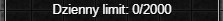
Dzienny limit oznacza ilość spalonych dzisiaj przedmiotów (max 2000). Przedmioty o typie Ulepszenia nie są wliczane w ten limit1.
Przycisk Ulepsz
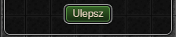
Przycisk Ulepsz, umożliwia ulepszanie przedmiotami o rzadkości wyższej niż pospolita. W procesie ulepszania brane są pod uwagę jedynie przedmioty znajdujące się w ekwipunku bohatera, które należą do typów określonych w zakładce Typy przedmiotów.
Przykład działania dodatku
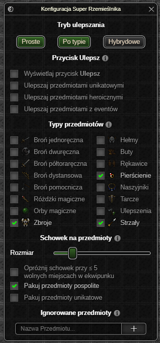
Jeżeli mamy włączone ulepszanie Hybrydowe, a użytkownik wybrał typy przedmiotów: Zbroje, Pierścienie i Strzały, to przy ulepszaniu przedmiotu w polu na Pancerze i przedmiotu w polu na ulepszanie Proste, działanie dodatku będzie wyglądało następująco:
Bohater zdobywa łup z potworów
- Schowek zapełnia się łupami, które spełniają powyższe kryteria.
- Następuje zatrzymanie bohatera - jest to wymagane do pomyślnego ulepszenia przedmiotów.
- Schowek zostaje opróżniony z łupów typu Zbroje, zostają one zużyte do ulepszenia przedmiotu w polu na
Pancerze. - Schowek zostaje opróżniony z łupów typu Pierścienie i Strzały, zostają one zużyte do ulepszenia przedmiotu w polu na ulepszanie
Proste. - Po pomyślnym ulepszeniu ruch bohatera zostaje odblokowany.
- Jeżeli którykolwiek z ulepszanych przedmiotów został maksymalnie ulepszony, jego slot zostaje odpowiednio zwolniony.
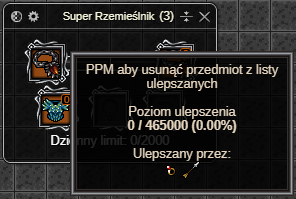
Ostatnia aktualizacja: 0.14.4
-
Teorytycznie nie są, ale gra zwraca informacje jakby były. Ostatecznie liczba może wynieść więcej niż 2000. ↩
⚠️ UWAGA: Dopóki zestaw nie osiągnie stabilnej wersji (1.0.0) mogą pojawiać się błędy oraz zmiany podstawowych funkcjonalności (Zgłaszanie Błędów)
Zapraszanie Do Grupy
🔒 Ten dodatek jest dostępny wyłącznie w wersji Premium. 🔒
Rozbudowane automatyczne wysyłanie zaproszeń do grup.
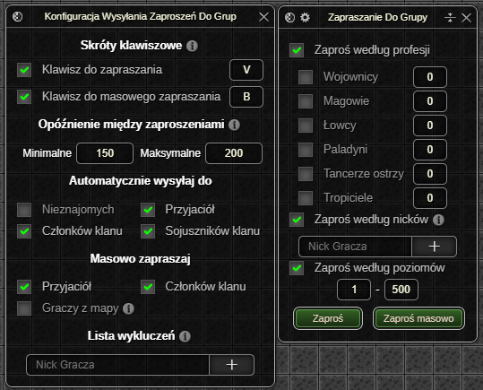
Okno Ustawień
Skróty klawiszowe
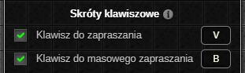
- Klawisz do zapraszania odpowiada za zapraszanie graczy znajdujących się w tej samej lokacji co bohater według relacji wybranych w zakładce automatycznie wysyłaj do.
- Klawisz do masowego zapraszania odpowiada za zapraszanie członków klanu, przyjaciół oraz graczy znajdujących się w tej samej lokacji co bohater.
- Podczas masowego zapraszania graczy na tej samej mapie co bohater pod uwage brane są ustawienia z zakładki automatycznie wysyłaj do.
Opóźnienie między zaproszeniami
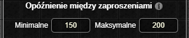
Opóźnienie między zaproszeniami określa zakres czasowy w milisekundach między wysyłaniem zaproszeń do grupy.
Automatycznie wysyłaj do
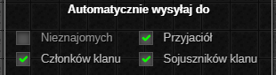
Lista relacji uwzględniana podczas zapraszania oraz masowego zapraszania (graczy z mapy) za pomocą dodatku.
Masowo zapraszaj
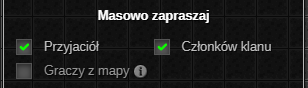
Lista relacji uwzględniana podczas masowego zapraszania za pomocą dodatku.
Lista wykluczeń
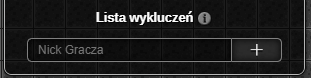
Jeżeli nick gracza znajduje się na liście wykluczeń, zaproszenie nie zostanie do niego wysłane.
Okno Aktywnych Ustawień
Ustawienia z tego okna są uwzględniane wyłącznie podczas zapraszania za pomocą przycisków Zaproś lub Zaproś masowo.
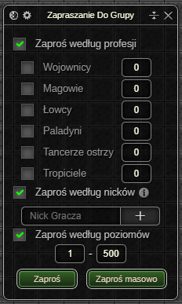
- Możliwość zapraszania graczy według profesji.
- Filtrowanie graczy z listy kandydatów na podstawie obecnego stanu grupy oraz wszystkich włączonych filtrów profesji. Jeżeli filtr jest wyłączony żaden gracz o danej profesji nie zostanie zaproszony.
- Możliwość zapraszania graczy według nicków.
- Możliwość zapraszania graczy według poziomów.
Ostatnia aktualizacja: 0.14.4
⚠️ UWAGA: Dopóki zestaw nie osiągnie stabilnej wersji (1.0.0) mogą pojawiać się błędy oraz zmiany podstawowych funkcjonalności (Zgłaszanie Błędów)
Znacznik
Dodatek umożliwia konfigurowanie ikon oraz podpisów przedmiotów z gry.
- Aliasy lokacji oraz ikony potworów nad przedmiotami z kategorii
custom_teleport. - Ikony typów obrażeń broni.
- Edytowanie ikon, podpisów oraz rzadkości przedmiotów bohatera.
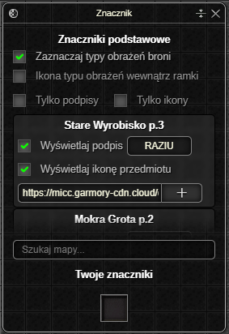
Okno Aktywnych Ustawień
Znaczniki podstawowe
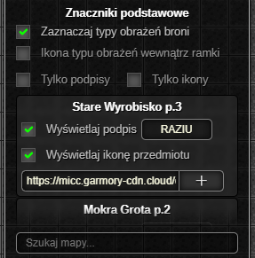
- Przełącznik ikon typów obrażeń broni.
- Opcjonalne wyświetlanie znacznika wewnątrz ramki.
- Przełączniki umożliwiające wyświetlanie wyłącznie podpisów lub ikon potworów wewnątrz znaczników podstawowych.
- Lista znaczników podstawowych. Wewnątrz pojedynczej komórki znajdują się:
- Przełącznik wyświetlania podpisu wraz z konfiguracją tekstu.
- Przełącznik wyświetlania ikony wraz z konfiguracją linku do obrazka.
- Wyszukiwarka znaczników podstawowych spośród listy.
Twoje znaczniki
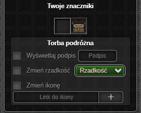
Znaczniki własne umożliwiają zmianę rzadkości, ikony oraz tekstu nad dowolnym przedmiotem bohatera.- Przełącznik wyświetlania podpisu wraz z konfiguracją tekstu.
- Przełącznik wyświetlanej rzadkości.
- Przełącznik wyświetlania ikony wraz z konfiguracją linku do obrazka.
Ostatnia aktualizacja: 0.14.4
Nadchodzące Zmiany
Poniżej znajduje się lista zmian1 nadchodzących w kolejnej aktualizacji zestawu wraz z informacją na temat aktualnego postępu prac.
Nadchodząca wersja
0.15.0 - aktualizacja będzie wymagała reinstalacji (z chrome websotre/firefox add-ons) oraz ponownego ustawiania dodatków (taka sytuacja następuje pierwszy i ostatni raz).
TODO
- Umożliwić korzystanie z zestawu na SI.
-
Zmieniono sposób przechowywania zmiennych globalnych. Od teraz wszystkie są reprezentowane przy użyciu
*const T(raw pointer). - Legendarny Notyfikator (premium (?))
- Zapisywanie konfiguracji dodatków per konto margonem, discord.
- Dodatek umożliwiający automatyczne wyświetlanie karty "na wierzchu" po rozpoczęciu tury bohatera. (tylko w premium)
- Dokumentacja dodatków oraz planu na przyszłość zestawu. (Jeżeli to czytasz to podziel się swoją opinią na temat książki na naszym discordzie 💖)
-
Znaczne poszerzenie funkcjonalności dodatku
Adaptacyjne Zestawy Do Walki.
-
Lista nie zawiera m.in. bugfixów oraz drobnych zmian w poszczególnych dodatkach. Ma ona na celu przedstawienie ogólnego zarysu nadchodzących aktualizacji. ↩
Legalność Zestawu
 ~ Priv8 autor Gargonem, MargoWorld.
~ Priv8 autor Gargonem, MargoWorld.
Żadna z funkcji zestawu Multipurpose Discord to Margonem Addons nie wywołuje reakcji antybota ani nie wysyła nietypowych zapytań.
Mechanizm kolejkowania zapytań wewnątrz gry pozostaje nienaruszony. MDMA posiada własną kolejkę, która jest uwzględniana tylko wtedy, gdy kolejka gry jest pusta.
Zestaw nie przechowuje również żadnych danych wewnątrz obiektów globalnych takich jak window, czy też localStorage. Dodatkowo każdy element DOM zestawu jest renderowany wewnątrz shadow DOM co czyni go niewykrywalnym z poziomu kodu JS, w tym kodu gry.
Czy Dostanę Bana?
Nie, jeżeli korzystasz wyłącznie z MDMA. Zestaw jest w pełni niewykrywalny przez antybota i o ile nie korzystasz z innych skryptów twoje konto nie zostanie zbanowane za dodatki.
Często zadawane pytania
1. Czy zestaw jest bezpłatny?
Tak, część dodatków jest dostępna za darmo. Aby z nich korzystać, należy dołączyć do naszego serwera Discord i zweryfikować swój adres e-mail na koncie Discord.
2. Jak otworzyć zestaw?
Domyślnie za pomocą klawisza Tab lub klikając lewym przyciskiem myszy na widżet znajdujący się obok toreb.
3. Czy zestaw działa na NI/SI?
Zestaw działa na obydwu interfejsach, nowym oraz starym.
4. Czy zestaw działa na angielskiej wersji gry?
Tak, zestaw działa zarówno na polskiej, jak i angielskiej wersji margonem.
5. Ile kosztuje wersja premium?
Na tą chwilę dostępne są trzy pakiety premium:
| MDMA Starter | MDMA Plus | MDMA Gold |
|---|---|---|
| 9,99zł | 42,00zł | 84,00zł |
| — | +1 mies. EKSTRA | +3 mies. EKSTRA |
Więcej informacji na naszym serwerze Discord w kategorii Premium.
6. Czy dostanę bana za korzystanie z zestawu?
Nie, jeżeli korzystasz wyłącznie z MDMA. Zestaw jest w pełni niewykrywalny przez antybota i o ile nie korzystasz z innych skryptów twoje konto nie zostanie zbanowane za dodatki.